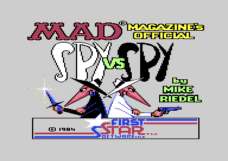
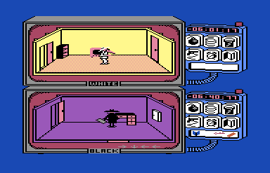

<meta charset="utf-8">
<meta name="viewport" content="width=device-width, initial-scale=1">
<title>Spy vs Spy</title>
<link rel="preconnect" href="https://fonts.googleapis.com">
<link rel="stylesheet" href="https://fonts.googleapis.com/css2?family=Lato:wght@400;700;900&family=IBM+Plex+Mono:wght@400;500&display=swap">
<style>
:root{
  --bg:#23262d; --paper:#e9e7e1; --surface:#ffffff; --surface-2:#f1efea; --line:#d5d3cc; --line-soft:#e0ded8;
  --ink:#2f3136; --ink-soft:#55585f; --ink-mute:#80838a;
  --link:#1f5fa8; --link-hover:#154480; --accent:#1f5fa8;
  --amber:#c25a00; --cyan:#1f5fa8; --coral:#d04a3a; --green:#2a8a4a; --violet:#4a5bd6; --hl:#fff0c2;
  --chip:#2f3136; --chip-ink:#ffffff;
  --c64blue:#40318d; --c64grey:#686868;
  --fd:'Lato',system-ui,sans-serif; --fb:'Lato',system-ui,sans-serif; --fm:'IBM Plex Mono',ui-monospace,Menlo,monospace;
  --col:1080px; --gx:68px; --fs:17px; --lh:1.6; --hw:900; --h1:46px; --h2:26px; --sy:48px; --pp:26px; --r:10px;
  --plate-shadow:0 1px 2px rgba(0,0,0,.05),0 4px 14px rgba(0,0,0,.05);
}
*{box-sizing:border-box}
html{background:var(--bg);min-height:100%}
body{background:var(--paper);color:var(--ink);font-family:var(--fb);font-size:var(--fs);line-height:var(--lh);max-width:var(--col);margin:0 auto;min-height:100vh;padding:0 0 4rem}
h1,h2,h3{font-weight:var(--hw);letter-spacing:-.01em;text-wrap:balance;color:var(--ink);margin:0}
.wrap{padding:0 var(--gx)}
.hero{padding:48px var(--gx) 8px;text-align:left}
.eyebrow{font-family:var(--fm);font-size:12px;letter-spacing:.08em;text-transform:uppercase;color:var(--ink-mute);margin:0 0 10px}
.hero h1{font-size:var(--h1);line-height:1.15;letter-spacing:-.02em;margin:0 0 14px}
.hero .sub{margin:0 0 .6em;color:var(--ink-soft)}
section{padding:var(--sy) 0 24px}
section:last-of-type{border-bottom:none}
.fig{font-family:var(--fm);font-size:12px;letter-spacing:.08em;text-transform:uppercase;color:var(--ink-mute);margin:0 0 10px}
h2.t{font-size:var(--h2);margin-bottom:12px}
.lede{color:var(--ink-soft);margin:0 0 30px}
.plate{background:var(--surface);border:1px solid var(--line);border-radius:var(--r);padding:var(--pp);box-shadow:var(--plate-shadow)}
.cap{font-size:14px;color:var(--ink-mute);margin-top:14px;line-height:1.55}
.cap b{color:var(--ink);font-weight:700}
code{font-family:var(--fm);font-size:.82em;background:var(--chip);color:var(--chip-ink);border-radius:4px;padding:2px 6px;white-space:nowrap}
.svs-cv{display:block;width:100%;height:auto;image-rendering:pixelated;border-radius:6px}
.svs-stack{position:relative}
.svs-stack canvas+canvas{position:absolute;left:0;top:0}
.svs-bar{display:flex;flex-wrap:wrap;gap:8px;align-items:center;margin:0 0 14px;font-family:var(--fm);font-size:12.5px}
.svs-bar button,.svs-bar select{font:inherit;background:var(--surface);border:1px solid var(--line);color:var(--ink);padding:6px 10px;border-radius:6px;cursor:pointer}
.svs-bar button:hover{border-color:var(--ink-mute)}
.svs-bar button.svs-on{background:var(--chip);color:var(--chip-ink);border-color:var(--chip)}
.svs-bar label{color:var(--ink-mute)}
.svs-read{font-family:var(--fm);font-size:13px;color:var(--ink-soft);margin:10px 0 0;min-height:1.6em}
.svs-tbl{border-collapse:collapse;width:100%;font-size:14.5px;margin:6px 0 0}
.svs-tbl th,.svs-tbl td{text-align:left;padding:6px 10px;border-bottom:1px solid var(--line-soft);vertical-align:top}
.svs-tbl th{font-family:var(--fm);font-size:11.5px;letter-spacing:.06em;text-transform:uppercase;color:var(--ink-mute);font-weight:500}
.svs-tbl td.svs-n{font-family:var(--fm);text-align:right;white-space:nowrap}
.svs-scroll{overflow-x:auto}
.svs-grid{display:grid;grid-template-columns:repeat(4,minmax(0,1fr));gap:8px;margin:0 0 14px}
.svs-grid button{font:inherit;font-size:14px;text-align:left;background:var(--surface-2);border:1px solid var(--line);border-radius:8px;padding:8px 10px;cursor:pointer;color:var(--ink)}
.svs-grid button:hover{border-color:var(--ink-mute)}
.svs-grid button small{display:block;font-family:var(--fm);font-size:11.5px;color:var(--ink-mute)}
.svs-panel{display:grid;grid-template-columns:repeat(4,minmax(0,1fr));gap:10px;margin:0 0 6px}
.svs-panel div{background:var(--surface-2);border-radius:8px;padding:10px 12px}
.svs-panel b{display:block;font-family:var(--fm);font-size:22px;font-weight:500;color:var(--ink)}
.svs-panel span{font-family:var(--fm);font-size:11.5px;color:var(--ink-mute);letter-spacing:.04em;text-transform:uppercase}
.svs-miss{font-size:14px;color:var(--coral)}
@media (max-width:720px){:root{--gx:16px;--h1:36px;--pp:14px}.svs-grid,.svs-panel{grid-template-columns:repeat(2,minmax(0,1fr))}}
.ov-pair{display:flex;gap:18px;flex-wrap:wrap;margin:0 0 22px}
.ov-pair figure{margin:0;flex:1 1 280px}
.ov-pair img{width:100%;image-rendering:pixelated;border-radius:4px;display:block}
.ov-pair figcaption{font-size:14px;color:var(--ink-mute);margin-top:6px}
.ov-tab{border-collapse:collapse;width:100%;font-size:14px}
.ov-tab th,.ov-tab td{border-bottom:1px solid var(--line-soft);padding:6px 8px;text-align:left;vertical-align:top}
.ov-tab th{font-weight:700;color:var(--ink-soft)}
.ov-scroll{overflow-x:auto;margin:0 0 22px}
</style>
<!-- tabs -->
<header class="hero">
  <p class="eyebrow">1984 · First Star Software</p>
  <h1>Spy vs Spy</h1>
  <p class="sub">Spy vs Spy brings Antonio Prohías's wordless MAD Magazine strip to the Commodore 64 as a race for two. A white spy and a black spy search the same foreign embassy at the same moment, each on their own half of the screen, for a briefcase and the four things it must hold to get past the airport guard: a passport, money, a key and the secret plans. The first to pack them all and reach the exit catches the plane. On the way, each spy hides bombs, springs, buckets of water and guns on strings for the other to find, hunts the furniture for the remedies, and fights with a club when the two meet. A second player can take the black spy, or the computer plays it, with the embassy's every secret known from the start. Mike Riedel wrote it for First Star Software, which published it in North America in November 1984; Beyond Software sold it in Britain that Christmas.</p>
</header>
<main class="wrap">

<section>
  <p class="fig">01 · The game</p>
  <h2 class="t">Two spies racing for the same briefcase</h2>
  <div class="ov-pair">
    <figure><figcaption>The title screen.</figcaption></figure>
    <figure><figcaption>Play: the white spy's monitor above, the black spy's below, each beside its trapulator.</figcaption></figure>
  </div>
  <p>Before a game, an options screen sets the number of players, one of eight difficulty levels, the computer's IQ from 1 to 5 for a one-player game, and whether the airport stays hidden until the end. The level sets the size of the embassy, from 6 rooms with 7 minutes on each spy's clock to 36 rooms with 24. The white spy takes the joystick in port 2 and the top half of the screen; the black spy takes port 1 and the bottom half, or is played by the computer. Each half shows its spy's room in perspective, with a trapulator beside it: a clock, six buttons and a row for what the spy is carrying.</p>
  <p>The briefcase, passport, money, key and secret plans are hidden in the furniture, at most one to a room. A spy searches a piece of furniture or opens a door by pressing fire beside it, and carries one thing at a time unless it is packed in the briefcase. Pressing fire twice opens the trapulator, which sets a bomb or a spring in the furniture, a bucket of water or a gun on a string over a door, or a time bomb in the room, or shows a map of the embassy at a cost in points and time. Each trap has a remedy hidden in the furniture, and a spy who walks into a trap without it lies stunned and loses 20 seconds. When the two spies meet in a room, each drops what it carries, and they fight with clubs until one has taken ten hits.</p>
  <p>A spy who reaches the exit door with all four items in the briefcase escapes to the airport, where every second left on the clock is worth 7 points and the final score decides one of ten ranks, from A KNEE HIGH SPY to GRAND MASTER SPY. Without all four, the airport guard throws the spy back. A spy whose clock runs out plays no further, and the game ends when both spies have finished. How it works shows the code behind each of these rules, and Controls shows what each stick and key does.</p>
</section>

<section>
  <p class="fig">02 · The release</p>
  <h2 class="t">Mike Riedel's game for First Star, sold in Britain by Beyond</h2>
  <p>Spy vs Spy began as a strip in MAD Magazine. Antonio Prohías, a Cuban cartoonist, created it for issue 60, dated January 1961, and drew it until 1987: a white spy and a black spy, alike in everything else, forever setting booby traps for each other, without a word of dialogue. First Star Software, founded in 1982 by Richard Spitalny, Billy Blake, Peter Jablon and Fernando Herrera, took the licence, and the game's title screen calls it "MAD Magazine's Official Spy vs Spy".</p>
  <p>Mike Riedel designed and programmed the Commodore 64 version, and the title screen carries his name; Nick Scarim wrote the music, though his name is nowhere in the game. First Star released it in North America in November 1984, on the Commodore 64 and, in a version programmed by Jim Nangano, on the Atari 8-bit computers. In Britain, Beyond Software, the publisher of The Lords of Midnight, released it under licence in time for Christmas 1984, at £9.95. It was sold on disk and on cassette. The copy analysed on this site is First Star's North American disk, which runs only on an NTSC machine.</p>
  <p>Versions for other machines followed: the Apple II in January 1985, the Amstrad CPC and ZX Spectrum later in 1985, the BBC Micro, Acorn Electron and Commodore 16 in 1987, and the Amiga and Atari ST in 1989. Kemco's Nintendo Entertainment System version came out in Japan in 1986 and in North America in 1988, and Sega made one for its Master System. First Star followed the game with two sequels, Spy vs. Spy II: The Island Caper and Spy vs. Spy III: Arctic Antics.</p>
</section>

<section>
  <p class="fig">03 · Reception</p>
  <h2 class="t">Commodore User called it a sure fire hit</h2>
  <div class="plate ov-scroll">
    <table class="ov-tab">
      <tr><th>Source</th><th>Version</th><th>Verdict</th></tr>
      <tr><td>Commodore User, issue 15, December 1984, page 66</td><td>Commodore 64 (Beyond)</td><td>Presentation 4, skill level 4, interest 4, value for money 3, each out of 5: "a sure fire hit"</td></tr>
      <tr><td>Commodore User, issue 24, September 1985</td><td>Commodore 64 (Beyond)</td><td>number 13 in the magazine's general chart</td></tr>
      <tr><td>Video, February 1985 (Bill Kunkel)</td><td>not stated</td><td>"a rousing action-strategy contest" with "excellent" graphics</td></tr>
      <tr><td>Antic, May 1985</td><td>Atari 8-bit</td><td>"one of the most original and clever games for the Atari computers yet"</td></tr>
      <tr><td>Crash, issue 19, August 1985</td><td>ZX Spectrum</td><td>a Crash Smash</td></tr>
      <tr><td>Your Sinclair, Official Top 100 Games of All Time</td><td>ZX Spectrum</td><td>number 20</td></tr>
    </table>
    <p class="cap"><b>Contemporary verdicts.</b> The two Commodore User entries are read from scans of the magazine; the others are as Wikipedia gives them (sources below).</p>
  </div>
  <p>Commodore User reviewed the Commodore 64 version in its December 1984 issue, on Beyond's release. The review singled out the split screen that lets two players play at once, and the trapulator's six gadgets, and ended: "Spy Vs Spy is a sure fire hit and welcome addition to any 64 owners' games collection." It scored four out of five for presentation, skill level and interest, and three for value for money. By September 1985 the game was at number 13 in the same magazine's general chart.</p>
  <p>The American magazine Ahoy! praised the Commodore 64 version for its faithfulness to the comic strip and for letting one or two play, and later picked out its graphics, its theme tune and its comic deaths. The other machines' versions did as well: Antic could not recommend the Atari version highly enough, Crash gave the Spectrum version its Crash Smash award, and Your Sinclair later placed it at number 20 among the best Spectrum games of all time. Kemco's NES version sold 300,000 copies in North America.</p>
  <p>Commodore 64 players still rate it well. On 11 November 2026 C64-Wiki listed an average of 8.3 out of 10 from 157 votes on Lemon64, and 7.75 from 44 votes among its own readers.</p>
</section>

<section>
  <p class="fig">04 · Sources</p>
  <h2 class="t">Where these facts come from</h2>
  <ul>
    <li>The game itself: its title screen (<a href="reference/title.png">screenshot</a>), options screen and play, run in the emulator; the rules are traced in How it works.</li>
    <li>Commodore User, issue 15, December 1984, pages 66-67, "Screen Scene", and issue 24, September 1985, the general chart: scans on the Internet Archive, <a href="https://archive.org/details/commodore-user-magazine-15">archive.org/details/commodore-user-magazine-15</a> and <a href="https://archive.org/details/commodore-user-magazine-24">archive.org/details/commodore-user-magazine-24</a>, read 11 November 2026.</li>
    <li>Wikipedia, "Spy vs. Spy (1984 video game)", <a href="https://en.wikipedia.org/wiki/Spy_vs._Spy_(1984_video_game)">en.wikipedia.org</a>, read 11 November 2026: the programmers and composers, the release dates of each version, the sequels, the reviews in Video, Ahoy!, Antic and Crash, the Your Sinclair list and the NES sales.</li>
    <li>Wikipedia, "Spy vs. Spy", <a href="https://en.wikipedia.org/wiki/Spy_vs._Spy">en.wikipedia.org</a>, read 11 November 2026: the comic strip, its creator and its first issue.</li>
    <li>Wikipedia, "First Star Software", <a href="https://en.wikipedia.org/wiki/First_Star_Software">en.wikipedia.org</a>, read 11 November 2026: the company's founders and its first year.</li>
    <li>C64-Wiki, "Spy vs Spy", <a href="https://www.c64-wiki.com/wiki/Spy_vs_Spy">www.c64-wiki.com</a>, read 11 November 2026: the music's composer, the media, and the players' ratings.</li>
  </ul>
</section>

</main>
<footer style="margin:16px 0 0;padding:22px var(--gx) 0;border-top:1px solid #e0ded8;font-family:'IBM Plex Mono',ui-monospace,Menlo,monospace;font-size:12px;color:#80838a"><a href="https://github.com/gamesexplained/gamesexplained" aria-label="GitHub" style="display:inline-flex;align-items:center;justify-content:center;width:26px;height:26px;margin-left:8px;border:1px solid #e0ded8;border-radius:7px;background:#ffffff;color:#80838a;vertical-align:middle"><svg width="15" height="15" viewBox="0 0 24 24" fill="currentColor" aria-hidden="true"><path d="M12 .297c-6.63 0-12 5.373-12 12 0 5.303 3.438 9.8 8.205 11.385.6.113.82-.258.82-.577 0-.285-.01-1.04-.015-2.04-3.338.724-4.042-1.61-4.042-1.61C4.422 18.07 3.633 17.7 3.633 17.7c-1.087-.744.084-.729.084-.729 1.205.084 1.838 1.236 1.838 1.236 1.07 1.835 2.809 1.305 3.495.998.108-.776.417-1.305.76-1.605-2.665-.3-5.466-1.332-5.466-5.93 0-1.31.465-2.38 1.235-3.22-.135-.303-.54-1.523.105-3.176 0 0 1.005-.322 3.3 1.23.96-.267 1.98-.399 3-.405 1.02.006 2.04.138 3 .405 2.28-1.552 3.285-1.23 3.285-1.23.645 1.653.24 2.873.12 3.176.765.84 1.23 1.91 1.23 3.22 0 4.61-2.805 5.625-5.475 5.92.42.36.81 1.096.81 2.22 0 1.606-.015 2.896-.015 3.286 0 .315.21.69.825.57C20.565 22.092 24 17.592 24 12.297c0-6.627-5.373-12-12-12"/></svg></a><a href="https://discord.gg/3V9GWyRDWV" aria-label="Discord" style="display:inline-flex;align-items:center;justify-content:center;width:26px;height:26px;margin-left:8px;border:1px solid #e0ded8;border-radius:7px;background:#ffffff;color:#80838a;vertical-align:middle"><svg width="15" height="15" viewBox="0 0 24 24" fill="currentColor" aria-hidden="true"><path d="M20.317 4.3698a19.7913 19.7913 0 00-4.8851-1.5152.0741.0741 0 00-.0785.0371c-.211.3753-.4447.8648-.6083 1.2495-1.8447-.2762-3.68-.2762-5.4868 0-.1636-.3933-.4058-.8742-.6177-1.2495a.077.077 0 00-.0785-.037 19.7363 19.7363 0 00-4.8852 1.515.0699.0699 0 00-.0321.0277C.5334 9.0458-.319 13.5799.0992 18.0578a.0824.0824 0 00.0312.0561c2.0528 1.5076 4.0413 2.4228 5.9929 3.0294a.0777.0777 0 00.0842-.0276c.4616-.6304.8731-1.2952 1.226-1.9942a.076.076 0 00-.0416-.1057c-.6528-.2476-1.2743-.5495-1.8722-.8923a.077.077 0 01-.0076-.1277c.1258-.0943.2517-.1923.3718-.2914a.0743.0743 0 01.0776-.0105c3.9278 1.7933 8.18 1.7933 12.0614 0a.0739.0739 0 01.0785.0095c.1202.099.246.1981.3728.2924a.077.077 0 01-.0066.1276 12.2986 12.2986 0 01-1.873.8914.0766.0766 0 00-.0407.1067c.3604.698.7719 1.3628 1.225 1.9932a.076.076 0 00.0842.0286c1.961-.6067 3.9495-1.5219 6.0023-3.0294a.077.077 0 00.0313-.0552c.5004-5.177-.8382-9.6739-3.5485-13.6604a.061.061 0 00-.0312-.0286zM8.02 15.3312c-1.1825 0-2.1569-1.0857-2.1569-2.419 0-1.3332.9555-2.4189 2.157-2.4189 1.2108 0 2.1757 1.0952 2.1568 2.419 0 1.3332-.9555 2.4189-2.1569 2.4189zm7.9748 0c-1.1825 0-2.1569-1.0857-2.1569-2.419 0-1.3332.9554-2.4189 2.1569-2.4189 1.2108 0 2.1757 1.0952 2.1568 2.419 0 1.3332-.946 2.4189-2.1568 2.4189Z"/></svg></a><br>© Games Explained contributors. Write-ups, facts and symbol maps are available under <a href="https://creativecommons.org/licenses/by-sa/4.0/" style="color:#1f5fa8;text-decoration:none">CC BY-SA 4.0</a>; code under <a href="https://opensource.org/licenses/MIT" style="color:#1f5fa8;text-decoration:none">MIT</a></footer>
